Fără pesticide
Combatem dăunătorii natural.
Ferma noastră din Sîngerei cultivă legume, fructe și verdețuri doar cu îngrășăminte naturale. Le culegem dimineața și le livrăm în Bălți.
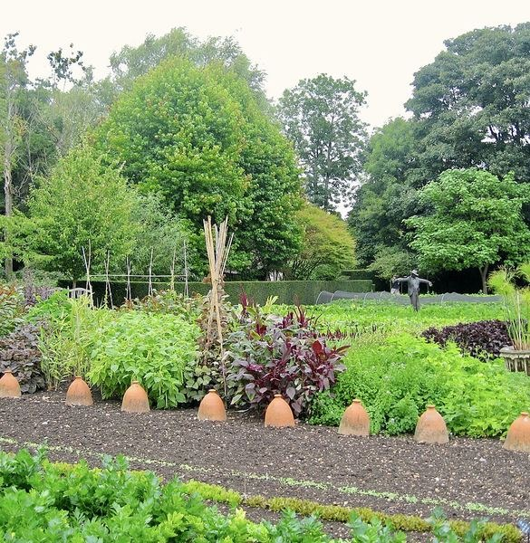
DE CE LIVADA VERDE
Lucrăm pământul ca bunicii, dar cu grijă de mediu.
Combatem dăunătorii natural.
Nu ținem marfa în depozit.
Lăzi de lemn și pungi de pânză.
Vino sâmbăta să culegi singur.
PRODUSE
Prețurile se schimbă după sezon și recoltă.
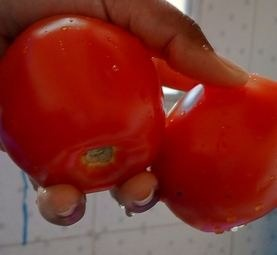
1 kg · soi românesc
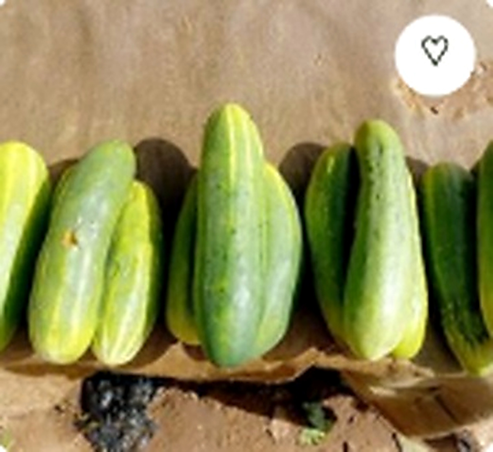
1 kg · din seră
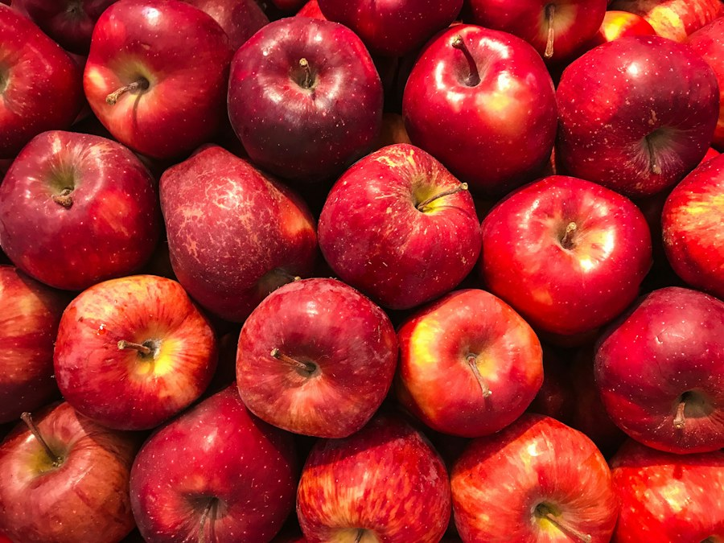
2 kg · din livadă
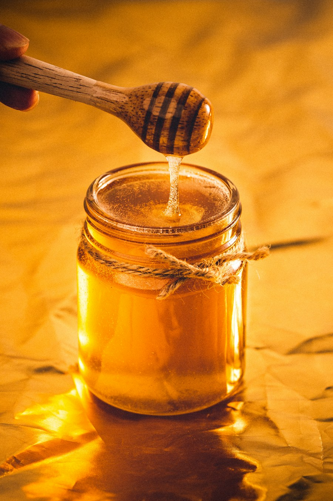
borcan de 500 g
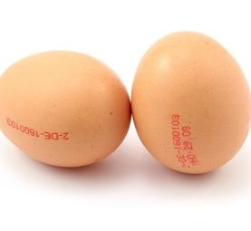
10 buc. · găini libere
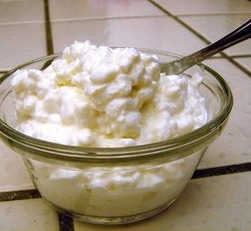
500 g · de casă
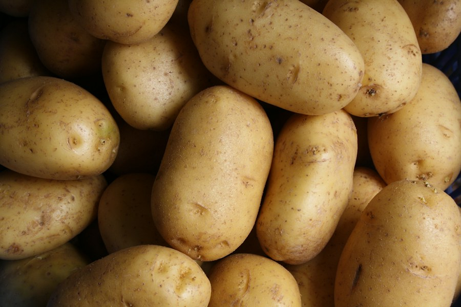
3 kg · recolta 2026
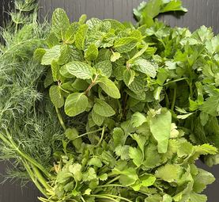
mărar, pătrunjel
CLIENȚI
Roșiile lor au gust ca cele din copilărie. Primim coșul în fiecare vineri, iar copiii abia așteaptă să vadă ce fructe au venit de data asta.
FERMA
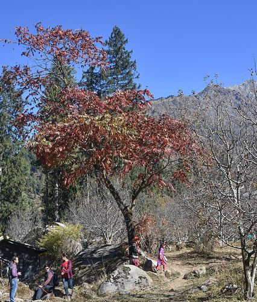
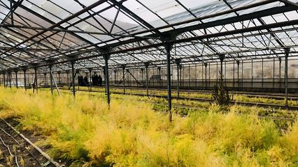
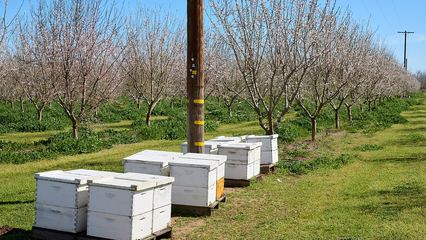
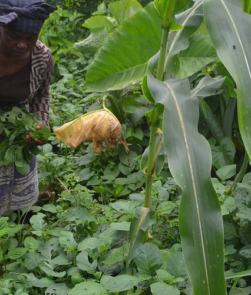
COȘURI
Alegi mărimea, noi punem ce e mai bun în sezon. Poți pune pe pauză oricând.
În fiecare luni îți scriem ce produse avem în coș.